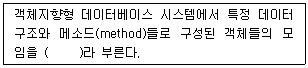
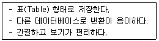
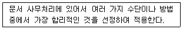
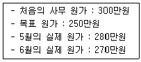
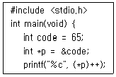
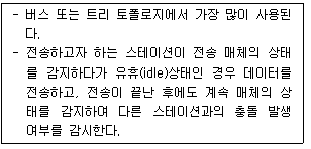

사무자동화산업기사 (2020-06-06 기출문제)
1과목: 사무자동화 시스템
1. 전자우편을 엽서가 아닌 밀봉된 봉투에 넣어서 보낸다는 개념으로 IETF(Internet Engineering Task Force)에서 인터넷 초안으로 채택한 것은?
- PEM
- PGP
- S/MIME
- PGP/MOME
(정답률: 70%)

2. 데이터를 복수 또는 분할 저장하여 병렬로 데이터를 읽는 보조기억장치 또는 그 방법으로 디스크의 고장에 대비하여 데이터의 안정성을 높이는 기술은?
- SASD
- DASD
- RAID
- NAC
(정답률: 72%)
3. 사용자가 한번만 기록할 수 있으며 한번 기록된 것은 다시 지울 수 없는 형태의 기록 장치는?
- DVD-RW
- CD-R
- CD-RW
- DVD+RW
(정답률: 87%)
4. 다음 ()에 알맞은 용어는?

- 튜플(tuple)
- 에트리뷰트(attribute)
- 클래스(class)
- 릴레이션(relation)
(정답률: 88%)
5. 사무자동화 추진의 선결과제가 아닌 것은?
- 사무환경 정비
- 데이터베이스 정비
- 사무관리제도의 개혁
- 조직 및 체계의 재정비
(정답률: 67%)
6. 프로그램을 실행하는 도중 예기치 않은 상황이 발생할 경우, 현재 실행 중인 작업을 즉시 중단하고 발생된 상황을 우선 처리한 후 실행 중이던 작업으로 복귀하는 것은?
- Deadlock
- Interrupt
- Blocking
- System call
(정답률: 78%)
7. 정보의 송수신을 원활하게 하기 위하여 정보를 일시적으로 저장하여 처리 속도의 차를 수정하는 방식은?
- streaming
- buffering
- caching
- mapping
(정답률: 82%)
8. 전자우편(E-mail)받을 때 사용하는 프로토콜은?
- HTTP
- SMTP
- FTP
- POP3
(정답률: 74%)
9. 팩시밀리의 특징으로 틀린 것은?
- 일반 전화회전을 이용하여 즉시 전송 가능하다.
- 종이원고의 내용을 원격지에서 충실하게 기록 재생할 수 있다.
- 원하는 시간에 원하는 정보 전송이 가능하다.
- 동일 내용을 한 번에 한 명의 수신자에게만 보낼 수 있다.
(정답률: 87%)
10. 다음 중 사무자동화 응용프로그램의 종류가 아닌 것은?
- Spreadsheet
- DBMS
- Windows
- Word-processor
(정답률: 83%)
11. 새로운 제품이나 서비스를 창조해내기 위해 다른 웹사이트들의 콘텐츠를 조합하여 새로운 웹서비스를 만들어 내는 것은?
- 위키
- 블로그
- 소셜 태깅
- 매시업
(정답률: 81%)
12. 컴퓨터와 전화를 통합시켜 기존의 분리된 전화 업무와 컴퓨터 업무를 하나로 처리할 수 있도록 구성된 기술은?
- EIS
- DSS
- SIS
- CTI
(정답률: 73%)
13. 다음 저장기기에 대한 설명으로 옳은 것은?
- CD-ROM은 주로 주기억장치로 이용된다.
- 하나의 CD-ROM은 수십 기가의 데이터를 저장할 수 있다.
- 광디스크의 용량은 650MB 뿐이다.
- CD-ROM은 등선속도(CLV)방식을 이용한다.
(정답률: 73%)
14. 데이터베이스 모형 중 다음과 관련 있는 것은?

- 관계모형
- 계층모형
- 망모형
- 트리모형
(정답률: 75%)
15. “전자상거래 등에서의 소비자보호에 관한 법률”에 따라 통신 판매업자의 변경신고 시 해당 변경사항이 발생한 날로부터 며칠 이내에 신고서를 제출해야 하는가?
- 5일
- 10일
- 15일
- 20일
(정답률: 80%)
16. 다음 중 DRAM의 설명으로 틀린 것은?
- 비휘발성 기억소자이다.
- Refresh 작업이 필요하다.
- 전력소모가 적다.
- SRAM보다 처리속도가 느리다.
(정답률: 69%)
17. 관계 데이터베이스에서 릴레이션은 참조할 수 없는 외래키 값을 가질 수 없음을 의미하는 제약 조건은?
- 개체 무결성
- 참조 무결성
- E-R 모델링
- 해싱
(정답률: 78%)
18. 사무자동화의 환경 개선이 주는 효과로 옳은 것은?
- 사무기기의 고장 시간의 증가
- 정확성 및 생산성의 저하
- 권태감 등의 감소로 작업자의 사기 고취
- 사무자동화 기기 위주의 배려로 작업 능률 향상
(정답률: 66%)
19. “전자상거래 등에서의 소비자보호에 관한 법률”에 따른 전자상거래 시 전자적 대금지급 관련자와 상관없는 자는?
- 전자결제수단의 발행자
- 전자결제서비스 제공자
- 전자결제서비스 책임자
- 전자결제서비스의 이행을 보조하는 자
(정답률: 61%)
20. 사무자동화의 기본요소가 아닌 것은?
- 제도
- 사람
- 장비
- 효율성
(정답률: 71%)
2과목: 사무경영관리 개론
21. 사무관리의 기능에 대한 설명으로 옳은 것은?
- 계획화는 경영활동을 합리적으로 수행하기 위하여 활동목표 및 실시과정에 가장 유리하게 도달할 수 있도록 사후에 결정짓는 것을 말한다.
- 조직화는 직무가 능률적으로 달성될 수 있도록 인적자원을 적재적소 배치, 물적요소의 명확화, 그리고 이들을 유기적으로 결합하여 직무가 능률적으로 달성될 수 있도록 하는 관리 활동이다.
- 동기화는 경영조직의 횡적조직과 계층별 조직에 있어서 업무수행에 필요한 이해나 견해가 대립된 활동과 노력을 결합하고 동일화해서 조화를 가하는 기능이다.
- 조정화는 기준과 지시에 따라 실행되고 있는가를 확인 대조하면서 오류를 범하지 않도록 사전에 방지하는 기능이다.
(정답률: 72%)
22. 행정기관에서 사무관리 방법상 필요에 따라 나누는 자료의 종류로 옳은 것은?
- 행정간행물, 행정자료, 일반자료
- 행정간행물, 행정자료, 사무내규자료
- 행정간행물, 법률고시자료, 일반자료
- 행정간행물, 회사규정자료, 일반자료
(정답률: 72%)
23. 다음 중 정보통신망을 구축하는 효과가 아닌 것은?
- 경제적 효과
- 신뢰성 향상
- 처리능력 향상
- 프로토콜의 다양화
(정답률: 81%)
24. 사무의 기능별 사무분류 중 경영자나 간부 등이 수행하는 경재, 관리자의 계획, 입안, 견적 등과 같이 전문적인 지식 등을 요구하는 사무를 무엇이라 하는가?
- 판단사무
- 작업사무
- 서기사무
- 잡무
(정답률: 76%)
25. 사무량을 측정하는 방법으로 소요시간을 측정하여 여기서 얻은 수치로써 표준시간을 계정하는 방법은?
- Stop watch법
- Work sampling법
- Standard data법
- Predetermined time standard법
(정답률: 67%)
26. 사무관리에 관한 설명으로 적절하지 않은 것은?
- 조직 운영에 필요한 유용한 정보를 효율적으로 관리하는 것을 의미한다.
- 기능에는 연결 기능, 정보 기능, 관리 기능이 있다.
- 의사결정에 필요한 정보를 신속, 정확하게 제공하는 것을 목적으로 한다.
- 사무작업을 능률화하기 위한 제반 관리 활동이다.
(정답률: 51%)
27. 기안문 구성시 본문의 내용이 표의 중간까지만 작성된 경우 어디에 “이하 빈칸”을 표시하여야 하는가?
- 마지막으로 작성된 장의 맨 하단
- 마지막으로 작성된 장의 아래 여백
- 마지막으로 작성된 칸
- 마지막으로 작성된 칸의 다음 칸
(정답률: 74%)
28. 다음 중 사무관리와 정보관리의 관계를 올바르게 설명한 것은?
- 사무관리는 기업체 정보처리와 통제를 담당한다.
- 사무관리는 정보관리를 포함한다.
- 정보관리는 의사결정에 필요한 광범위한 정보를 대상으로 한다.
- 정보관리의 목적은 지정된 데이터를 지정된 기일 및 방법으로 작성하는 것이다.
(정답률: 58%)
29. 다음은 문서관리의 기본원칙 중 무엇에 관한 것인가?

- 간소화
- 전문화
- 자동화
- 표준화
(정답률: 75%)
30. 길브레스(Gilbreth)의 “동작의 경제원칙”을 가장 잘 나타내고 있는 것은?
- 발로 할 수 있는 일은 오른손을 사용한다.
- 왼손으로 할 수 있는 작업이라도 오른손을 사용한다.
- 가능한 한 양손이 동시에 작업을 시작하되 끝날 때는 각각 끝나도록 한다.
- 이 원칙은 생산작업뿐만 아니라 사무작업에도 응용할 수 있다.
(정답률: 76%)
31. 사무계획을 함으로써 얻어지는 효과로 가장 적합한 것은?
- 사무원의 여유시간이 단축됨에 따라 사무업무가 중복된다.
- 중요한 업무를 중요하지 않은 업무보다 선행하여 처리한다.
- 관리자보다 작업자가 행동방침을 결정하게 되어 능률적인 작업을 한다.
- 업무량이 늘어나게 되어 고용증대 효과가 발생한다.
(정답률: 75%)
32. 공동저작물의 저작재산권을 행사할 수 있는 경우는?
- 저작재산권자 일부의 합의
- 저작재산권자 전원의 합의
- 저작재산권자 1/3의 합의
- 저작재산권자 2/3의 합의
(정답률: 74%)
33. 사무표준화의 목적 또는 효과와 가장 거리가 먼 것은?
- 직원들을 더욱 철저하게 감독, 통제할 수 있다.
- 사무원들의 공동 관심사에 대한 이해가 촉진된다.
- 사무원들을 능력별로 활용할 수 있다.
- 스텝 조직과 라인 조직의 업무 구분을 없앨 수 있다.
(정답률: 66%)
34. 산업안전보건기준에 관한 규칙에 따른 사업주가 근로자의 안전한 통행을 위해 통로에 시설해야 하는 조명 기준은?
- 50lux 이상
- 75lux 이상
- 90lux 이상
- 150lux 이상
(정답률: 70%)
35. 다음 자료에서 6월 사무관리의 원가절감 목표 달성도는 몇 %인가?

- 20%
- 40%
- 60%
- 80%
(정답률: 74%)
36. 사무조직의 형태 중 라인조직의 장점으로 가장 적합하지 않은 것은?
- 전문화의 결여
- 단순하고 이해하기 쉬움
- 결정과 집행의 신속
- 책임소재의 명확
(정답률: 79%)
37. 서로 다른 조직 간에 약속된 포맷을 사용하여 상업적 또는 행정상의 거래를 컴퓨터와 컴퓨터 간에 행하는 것은?
- EDPS
- INTERNET
- MIS
- EDI
(정답률: 72%)
38. 문서의 보관관리 유형 중 집중관리의 장점이 아닌 것은?
- 부서별 문서보관ㆍ보존에 따른 여러 설비가 필요치 않게 되어 경비 및 공간이 절약된다.
- 통일적으로 한 장소에서 관리하기 때문에 종합된 정보를 제공 받을 수 있다.
- 문서 관리 및 업무의 조정과 통제가 용이하다.
- 자료를 열람하고 이용하기 위한 방법과 절차가 매우 용이하다.
(정답률: 58%)
39. 사무의 의의와 종류에 대한 설명으로 틀린 것은?
- 사무는 조직의 목적을 수행하는 수단이다.
- 행정목적을 직접 수행하는 것은 본래사무이다.
- 본래사무는 참모부분이 담당하는 참모사무이다.
- 사무는 본래사무와 지원사무로 구분하기도 한다.
(정답률: 72%)
40. 사무실 배치를 할 때 고려해야 할 사항으로 옳지 않은 것은?
- 통일된 사무용 기구를 사용한다.
- 채광은 우측에서 잡히도록 한다.
- 자주 사용하는 사무용품은 그것을 사용하는 사무원 가까이에 배치한다.
- 업무에 알맞은 면적을 확보한다.
(정답률: 81%)
3과목: 프로그래밍 일반
41. 스래싱(thrashing) 현상을 방지하기 위한 방법이 아닌 것은?
- 다중 프로그래밍의 정도를 적정 수준으로 유지한다.
- 워킹 셋을 사용하지 않는다.
- 페이지 부재 빈도를 조절하여 사용한다.
- 부족한 자원을 증설하고, 일부 프로세스를 중단시킨다.
(정답률: 69%)
42. 컴파일 과정 중 원시 프로그램을 하나의 긴 스트링으로 보고 원시 프로그램을 문자 단위로 스캐닝하여 문법적으로 의미있는 일련의 문자(토큰)들로 분할해 내는 작업은?
- 구문분석
- 원시분석
- 선행처리
- 어휘분석
(정답률: 58%)
43. 아래 코드의 실행 결과는?

- A
- B
- 65
- 66
(정답률: 50%)
44. 시간 구역성과 관련이 없는 것은?
- 순환(loop)
- 배열 순회(array traversal)
- 부 프로그램(sub program)
- 집계(totaling)
(정답률: 52%)
45. UNIX 운영체제에서 커널에 대한 설명으로 틀린 것은?
- 컴퓨터가 부팅될 때, 주기억장치에 적재된 후 상주하면서 실행된다.
- 프로세스 관리, 기억장치 관리 등의 기능을 수행한다.
- 하드웨어를 보호하고 프로그램과 하드웨어 간의 인터페이스 역할을 담당한다.
- 사용자의 명령어를 인식하여 프로그램을 호출하고 명령을 수행하는 명령어 해석기이다.
(정답률: 58%)
46. (aa∣b)*a의 정규표현으로 만들 수 있는 스트링이 아닌 것은?
- a
- aaa
- ba
- aba
(정답률: 64%)
47. 다음 중 Java에서 사용하는 기본형 타입은?
- 배열형
- 논리형
- 클래스형
- 인터페이스형
(정답률: 51%)
48. C언어에서 공용체를 정의하는 키워드는?
- struct
- union
- enum
- public
(정답률: 61%)
49. 다음 중 단항 연산자는?
- COMPLEMENT
- AND
- OR
- XOR
(정답률: 77%)
50. UNIX 명령어에서 현재 작업 중인 디렉터리 경로를 보여주는 명령어는?
- dir
- cat
- pwd
- write
(정답률: 61%)
51. 프로그래밍 언어의 번역 순서에 따른 관련 모듈(번역기)을 올바르게 나열한 것은?
- 컴파일러→링커→로더
- 링커→컴파일러→로더
- 로더→링커→컴파일러
- 컴파일러→로더→링커
(정답률: 72%)
52. BNF 표기법에서 정의를 나타내는 기호는?
- ＞＞=
- ＜＜=
- #=
- ::=
(정답률: 80%)
53. C언어에서 정수형 자료 선언 시 사용하는 것은?
- char
- float
- double
- int
(정답률: 75%)
54. C언어에서 이스케이프 시퀀스(Escape Sequence)에 대한 설명으로 틀린 것은?
- ＼n:null character
- ＼r:carriage return
- ＼f:form feed
- ＼b:backspace
(정답률: 67%)
55. “A+B*C-D"를 후위(Postfix) 표기법으로 표현한 것은?
- A B C * D - +
- A B + C * D -
- A B C + * D -
- A B C * + D -
(정답률: 65%)
56. 반복을 나타내는 구문은?
- A::α1|α2|α3
- A::={α}
- A::=α
- A::(α1|α2)β
(정답률: 75%)
57. 실행 중인 프로세스가 일정 시간 동안에 참조하는 페이지의 집합을 의미하는 것은?
- LOCALITY
- SEGMENT
- MONITOR
- WOREKING SET
(정답률: 70%)
58. 객체지향언어에서 객체를 생성하기 위한 자료형은?
- 클래스(class)
- 메시지(message)
- 행위(behavior)
- 사건(event)
(정답률: 74%)
59. 정적바인딩이 이루어지는 시간이 아닌 것은?
- 언어정의 시간
- 언어구현 시간
- 링크 시간
- 프로그램 호출 시간
(정답률: 58%)
60. 페이지 교체 알고리즘 중 현 시점에서 가장 오랫동안 사용하지 않은 페이지를 교체하는 기법은?
- SCR
- FIFO
- LFU
- LRU
(정답률: 70%)
4과목: 정보통신 개론
61. 서로 다른 기기들 간의 데이터 교환을 원활하게 수행할 수 있도록 표준화시켜 놓은 통신 규약을 무엇이라 하는가?
- 클라이언트
- 터미널
- 링크
- 프로토콜
(정답률: 82%)
62. 위상변화를 작게 하면서 반송파의 진폭도 바꿔 정보 전송률을 높이려는 변조방식은?
- ASK
- FSK
- PSK
- QAM
(정답률: 63%)
63. Shannon의 표본화정리에 의하면 보내려는 신호성분 중 최고 주파수의 최소 몇 배 이상으로 표본을 행하면 원신호를 충실하게 재현시킬 수 있는가?
- 1
- 2
- 4
- 8
(정답률: 63%)
64. ARQ(Automatic Repeat reQuest) 방식에 해당하지 않는 것은?
- Stop and Wait ARQ
- Adaptive ARQ
- Receive Ready ARQ
- Go back N ARQ
(정답률: 58%)
65. ATM 셀의 헤더 길이는 몇 byte인가?
- 2
- 5
- 8
- 10
(정답률: 67%)
66. Link State 방식의 라우팅 프로토콜은?
- RIP
- RIP V2
- IGRP
- OSPF
(정답률: 52%)
67. 가상회선 패킷교환 방식에 대한 설명으로 옳은 것은?
- 수신은 송신된 순서대로 패킷이 도착한다.
- 우회 경로로 패킷을 전달할 수 있어 신뢰성이 높다.
- 비연결형 서비스 방식이다.
- 먼저 전송했더라도 최적의 경로를 찾지 못하면 나중에 전송한 데이터보다 늦게 도착할 수 있다.
(정답률: 44%)
68. 전송 효율을 최대한 높이려고 데이터 블록의 길이를 동적으로 변경시켜 전송하는 ARQ방식은?
- Adaptive ARQ
- Stop-And-Wait ARQ
- Positive ARQ
- Distrbuted ARQ
(정답률: 66%)
69. 발광다이오드(LED)에서 나오는 빛의 파장을 이용해 빠른 통신 속도를 구현하는 기술은?
- LAN
- MCC
- Li-Fi
- SAA
(정답률: 75%)
70. OSI 7계층 모델에서 기계적, 전기적, 절차적 특성을 정의한 계층은?
- 전송 계층
- 데이터링크 계층
- 물리 계층
- 표현 계층
(정답률: 77%)
71. 다음 내용이 설명하고 있는 LAN의 매체 접근 제어방식은?

- CSMA/CD
- Token bus
- Token ring
- Slotted ring
(정답률: 61%)
72. PCM 방식의 데이터 전송 순서로 맞는 것은?
- 표본화→부호화→양자화→복호화
- 표본화→양자화→부호화→복호화
- 양자화→표본화→부호화→복호화
- 양자화→표본화→복호화→부호화
(정답률: 78%)
73. 광섬유 케이블의 설명으로 틀린 것은?
- 동축 케이블보다 더 넓은 대역폭을 지원한다.
- 전송속도가 UTP 케이블보다 빠르다.
- 동축 케이블에 비해 전자기적 잡음에 약하다.
- 동축 케이블에 비해 전송손실이 적다.
(정답률: 74%)
74. 다중접속 방식이 아닌 것은?
- FDMA
- TDMA
- CDMA
- XXUMA
(정답률: 67%)
75. 단일 송신자와 단일 수산자간의 통신이므로, 단일 인터페이스를 사용하는 IPv6 주소 지정 방식은?
- 애니캐스트
- 유니캐스트
- 멀티캐스트
- 브로드캐스트
(정답률: 62%)
76. IP 주소 체계에서 B클래스의 주소 범위는?
- 0.0.0.-127.255.255.255
- 128.0.0.0-191.255.255.255
- 192.0.0.0-223.255.255.255
- 224.0.0.0-239.255.255.255
(정답률: 68%)
77. TCP 전송 계층 프로토콜을 사용하여 통신하는 데 이용되는 소켓을 무엇이라 하는가?
- 스트림 소켓
- 데이터그램 소켓
- raw 소켓
- 리시빙 소켓
(정답률: 50%)
78. HDLC 프레임의 구조가 순서대로 옳은 것은?
- 플래그→주소부→제어부→정보부→FCS→플래그
- 플래그→제어부→FCS→정보부→주소부→플래그
- 플래그→주소부→정보부→FCS→제어부→플래그
- 플래그→제어부→FCS→주소부→정보부→플래그
(정답률: 67%)
79. FM에서 변조지수가 10, 변조신호의 최고 주파수를 4kHz라 할 때 소요 대역폭(kHz)은?
- 8
- 40
- 88
- 400
(정답률: 49%)
80. 800baud의 변조속도로 4상 위상 변조된 데이타의 신호 속도(bps)는?
- 100
- 1200
- 1600
- 3200
(정답률: 55%)